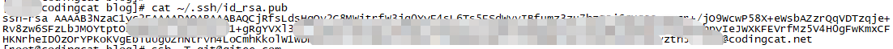
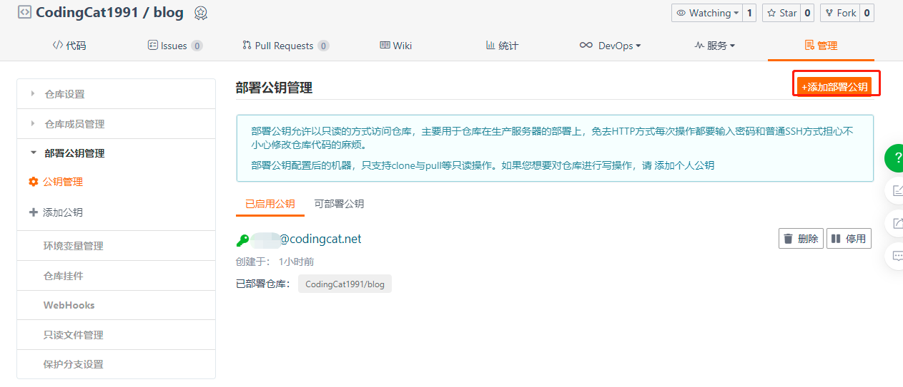
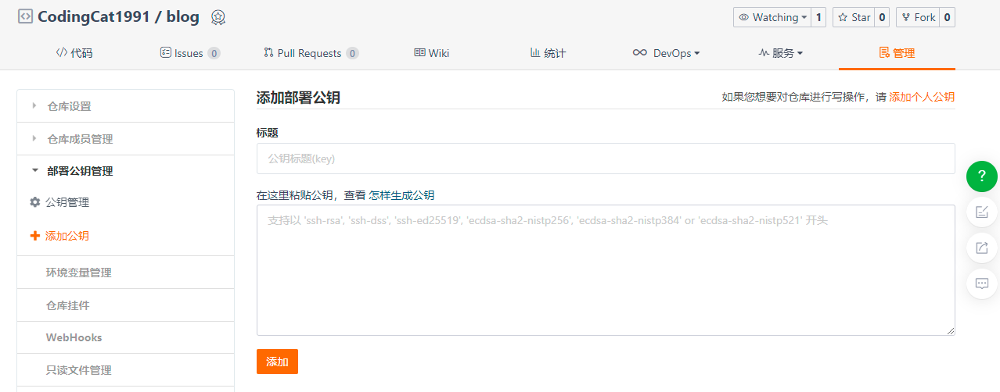
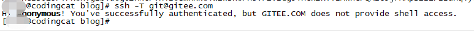
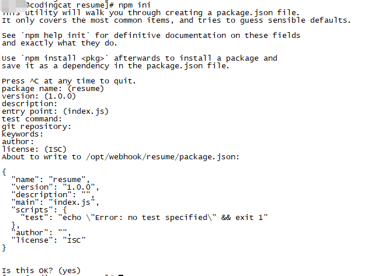
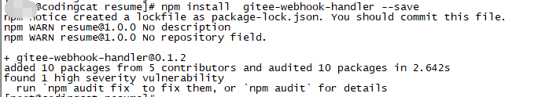
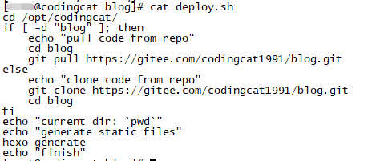
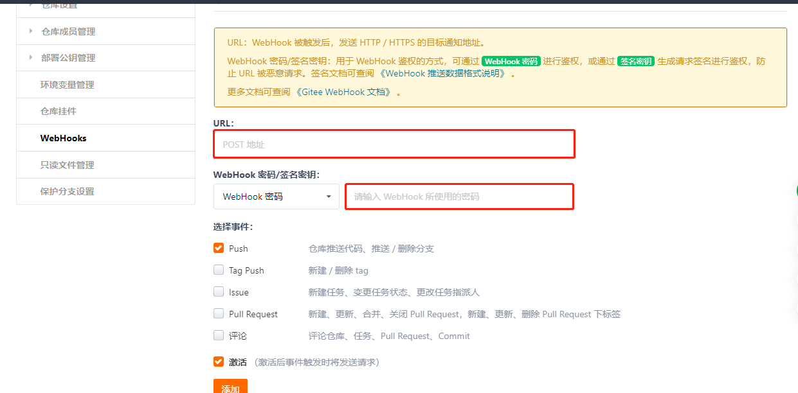
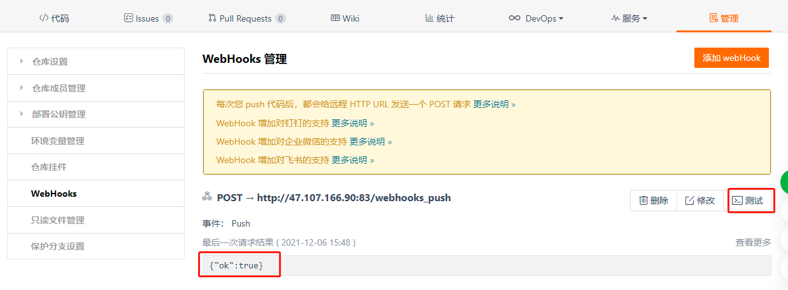
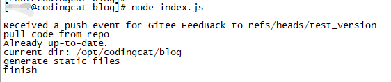

使用码云自动化部署应用
介绍
我们在做一些小型的网站开发的时候，希望能够在将代码推送到仓库后，能够实现自动部署。
本文介绍在使用hexo构建自己博客的时候，使用码云作为代码仓库，阿里云CentOS7服务器作为部署应用部署服务器来提供服务，使用码云提供的WebHook功能，如何实现在每次提交代码后能够自动打包，自动部署。
实现步骤
配置公钥
生成
执行如下代码，三次回车后会生成公钥
1
ssh-keygen -t rsa -C "git@gitee.com"
查看公钥
1
cat ~/.ssh/id_rsa.pub

添加公钥


标题可以自定义公钥部分输入步骤2查看得到的结果，点击添加即可
测试
在部署服务器上执行下面代码。输出如图表示已配置成功。
1
ssh -T git@gitee.com

创建wehook服务
安装node环境
略
初始化node引用
切换到node应用目录，执行下面脚本，一路回车即可。
1
npm ini

安装插件
1
npm install gitee-webhook-handler --save

创建服务脚本
新增index.js文件，内容如下：
1
2
3
4
5
6
7
8
9
10
11
12
13
14
15
16
17
18
19
20
21
22
23
24
25
26
27
28var http = require('http')
var createHandler = require('gitee-webhook-handler')
var handler = createHandler({ path: '/webhooks_push', secret: '123456' }) // webhookpost路径及密码
function run_cmd(cmd, args, callback) {
var spawn = require('child_process').spawn;
var child = spawn(cmd, args);
var resp = "";
child.stdout.on('data', function(buffer) { resp += buffer.toString(); });
child.stdout.on('end', function() { callback (resp) });
}
handler.on('error', function (err) {
console.error('Error:', err.message)
})
handler.on('Push Hook', function (event) {
console.log('Received a push event for %s to %s', event.payload.repository.name,event.payload.ref);
run_cmd('sh', ['./deploy.sh'], function(text){ console.log(text) }); //部署脚本文件路径
})
try {
http.createServer(function (req, res) {
handler(req, res, function (err) {
res.statusCode = 404
res.end('no such location')
})
}).listen(83) //服务监听端口
}catch(err){
console.error('Error:', err.message)
}创建部署脚本
部署脚本根据自己的需求创建，下图是我自己写的hexo博客的简单部署脚本

启动node服务
执行下面命令即可启动服务
1
node index.js
码云添加WebHook服务

URL填写上面启动服务后的地址，如我的是http://xx.xx.xx.xx:83/webhooks_push
WebHook密码/签名密钥填写服务脚本里面写的密码，如我的是：123456
测试服务

对应的日志输出：

提交代码实现自动部署
将代码推送到仓库可以看到对应的部署日志，且新增的文章已可以查阅。
本博客所有文章除特别声明外，均采用 CC BY-NC-SA 4.0 许可协议。转载请注明来自 写程序の猫！
评论
公告
欢迎光临我的博客，欢迎关注我的个人微信公众号，第一时间获取最新动态。